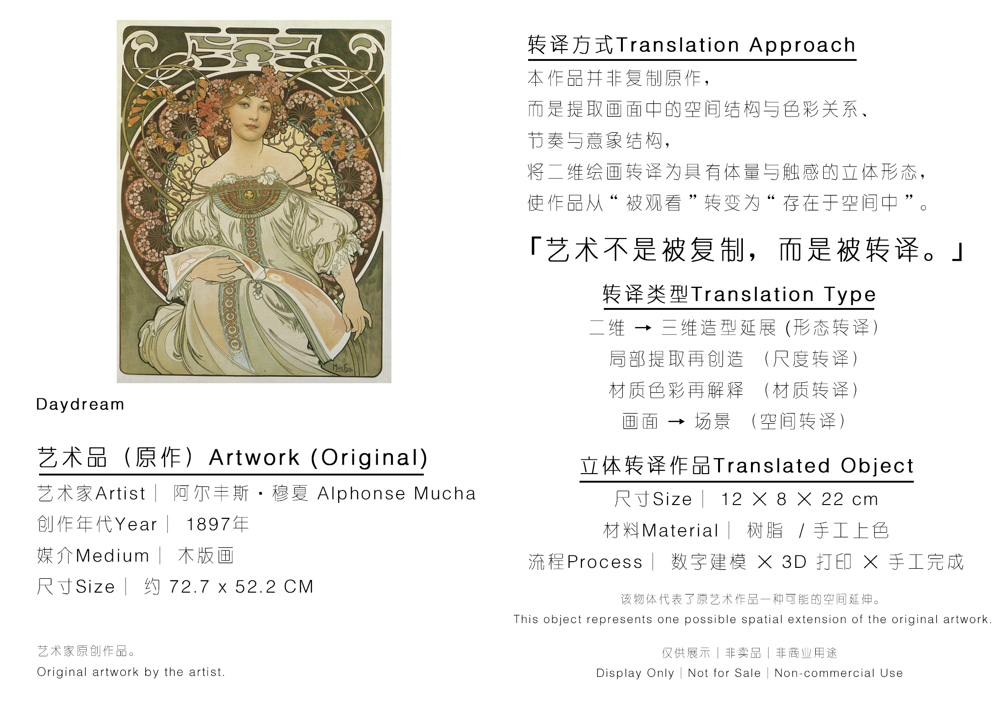
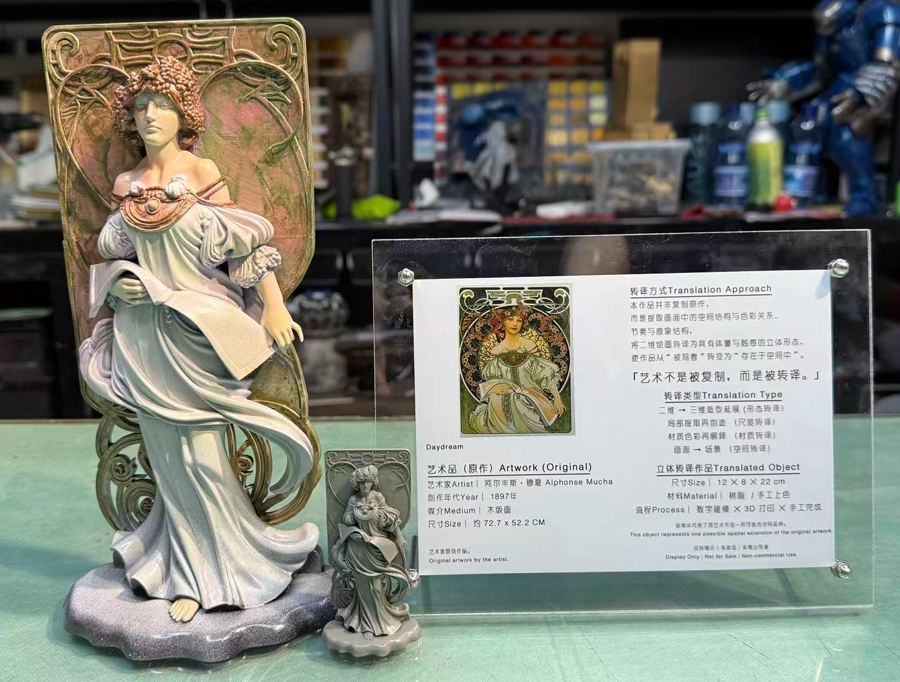

展签二维码入口
观众站在作品或模型前，扫描二维码即可进入该作品的数字档案页，看到原作、说明、实拍和三维模型。
Spatial Digital Archive
这一页以 Alphonse Mucha《Daydream》为样板，把原作信息、转译逻辑、实体模型实拍和三维模型放在同一条档案链路中。观众可以通过展签二维码进入页面，在线阅读作品背景，也可以旋转查看模型，为后续 AR / MR 展示和授权沟通留下清晰入口。
MVP Case 01
《Daydream》具有明确的装饰框架、人物姿态和花卉曲线。元维构的转译不是复制原作，而是提取画面中的空间结构、节奏与色彩关系，将二维图像转化为具备体量和触感的立体形态。这个档案页展示一件作品如何从“图像资料”进入“可展示、可导览、可授权沟通”的数字系统。


3D Model Viewer
当前页面使用轻量 GLB 文件，适合网页端预览和移动端加载。模型展示的是穆夏作品中人物、装饰背景与曲线节奏被转化后的空间版本，可作为展览现场二维码、线上档案页和后续 AR / MR 展示的共同素材。
观众站在作品或模型前，扫描二维码即可进入该作品的数字档案页，看到原作、说明、实拍和三维模型。
页面保留完整说明牌和实拍图，不裁切关键信息，方便馆方、观众和合作方理解转译依据。
同一 GLB 模型用于 AR / MR 空间放置、展厅导览和授权展示的轻量预览入口。
Mobile / MR Test
Archive Structure
艺术家、作品名称、年代、媒介、尺寸、原作版权归属与展示来源。
记录作品如何从二维图像进入空间结构：结构提取、比例重构、材质选择与制作方式。
记录实体模型、数字模型、白模、涂装版本、放大版本或展览版本。
展览展示、收藏样本、文创衍生、礼品定制、教育成果或空间装置。
明确原作是否为公共领域、是否获得艺术家授权，或当前仅作研究展示。
判断是否适合进入限量版、衍生品、空间项目、数字内容或 MR 展览授权。
MR Archive Layer
作品旁边设置二维码，观众扫码进入档案页，查看原作、说明、实拍与授权状态。
在网页中旋转观察转译模型，形成“原作 + 实体 + 数字模型”的完整记录。
在支持设备上将压缩模型作为展览延展内容查看，实现实体展览的数字增强。
Archive Entry
测试样本、真实艺术家案例和授权作品按同一系统进入档案，形成可检索、可展示、可授权、可进入 MR 展览的三维艺术档案库。